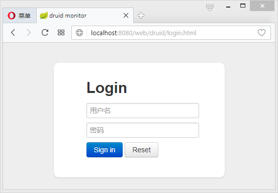
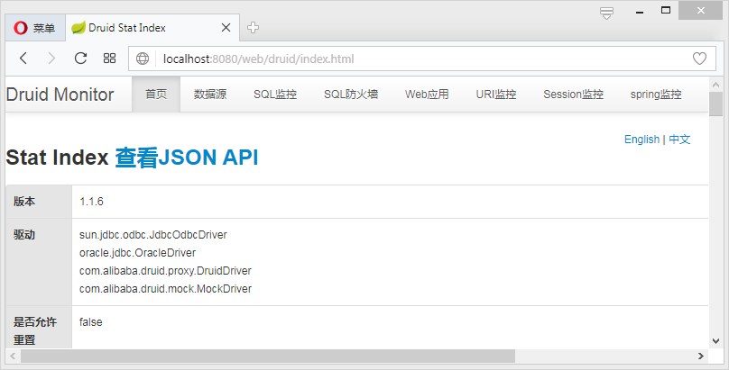
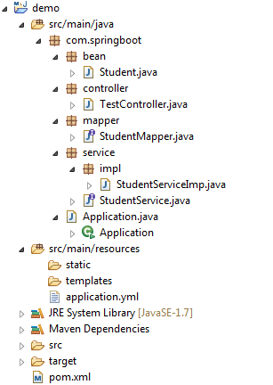
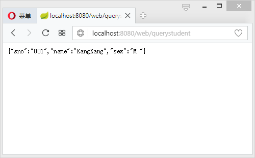
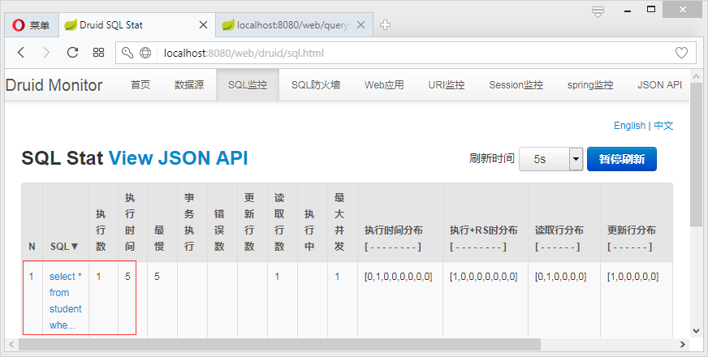

整合MyBatis之前，先搭建一个基本的Spring Boot项目开启Spring Boot。然后引入mybatis-spring-boot-starter和数据库连接驱动（这里使用关系型数据库Oracle 11g）。
mybatis-spring-boot-starter
在pom中引入：
1 | <dependency> |
不同版本的Spring Boot和MyBatis版本对应不一样，具体可查看官方文档：http://www.mybatis.org/spring-boot-starter/mybatis-spring-boot-autoconfigure/。
通过dependency:tree命令查看mybatis-spring-boot-starter都有哪些隐性依赖：
1 | +- org.mybatis.spring.boot:mybatis-spring-boot-starter:jar:1.3.1:compile |
可发现其包含了spring-boot-starter-jdbc依赖，默认使用tomcat-jdbc数据源。
引入ojdbc6
由于版权的原因，我们需要将ojdbc6.jar依赖安装到本地的maven仓库，然后才可以在pom中进行配置。
下载ojdbc6.jar文件后，将其放到比较好找的目录下，比如D盘根目录。然后运行以下命令：
1 | C:\Users\Administrator>mvn install:install-file -Dfile=D:/ojdbc6.jar -DgroupId=com.oracle -DartifactId=ojdbc6 -Dversion=6.0 - |
接着在pom中引入：
1 | <dependency> |
这里的groupid就是你之前安装时指定的-Dgroupid的值，artifactid就是你安装时指定的-Dartifactid的值，version也一样。
Druid数据源
Druid是一个关系型数据库连接池，是阿里巴巴的一个开源项目，地址：https://github.com/alibaba/druid。Druid不但提供连接池的功能，还提供监控功能，可以实时查看数据库连接池和SQL查询的工作情况。
配置Druid依赖
Druid为Spring Boot项目提供了对应的starter：
1 | <dependency> |
Druid数据源配置
上面通过查看mybatis starter的隐性依赖发现，Spring Boot的数据源配置的默认类型是org.apache.tomcat.jdbc.pool.Datasource，为了使用Druid连接池，需要在application.yml下配置：
1 | server: |
上述配置不但配置了Druid作为连接池，而且还开启了Druid的监控功能。 其他配置可参考官方wiki——https://github.com/alibaba/druid/tree/master/druid-spring-boot-starter
此时，运行项目，访问http://localhost:8080/web/druid：

输入账号密码即可看到Druid监控后台：

关于Druid的更多说明，可查看官方wiki——https://github.com/alibaba/druid/wiki/%E5%B8%B8%E8%A7%81%E9%97%AE%E9%A2%98
使用MyBatis
使用的库表：
1 | CREATE TABLE "SCOTT"."STUDENT" ( |
创建对应实体：
1 | public class Student implements Serializable{ |
创建一个包含基本CRUD的StudentMapper：
1 | public interface StudentMapper { |
StudentMapper的实现可以基于xml也可以基于注解。
使用注解方式
继续编辑StudentMapper：
1 |
|
简单的语句只需要使用@Insert、@Update、@Delete、@Select这4个注解即可，动态SQL语句需要使用@InsertProvider、@UpdateProvider、@DeleteProvider、@SelectProvider等注解。具体可参考MyBatis官方文档：http://www.mybatis.org/mybatis-3/zh/java-api.html。
使用xml方式
使用xml方式需要在application.yml中进行一些额外的配置：
1 | mybatis: |
测试
接下来编写Service：
1 | public interface StudentService { |
实现类：
1 | ("studentService") |
编写controller：
1 |
|
完整的项目目录如下图所示：

启动项目访问：http://localhost:8080/web/querystudent?sno=001：

查看SQL监控情况：

可看到其记录的就是刚刚访问/querystudent得到的SQL。